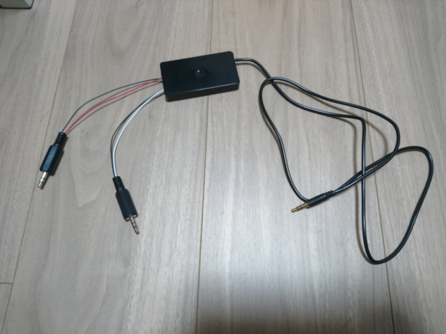

DEOCM の Tape端子に使えるケーブル (2020年3月11日現在)
DEOCM には Tape端子が付いていますが、これはデータレコーダーに繋げるための端子です。
ステレオジャックになっており、左チャンネルに SAVE出力、右チャンネルに LOAD入力が繋がっています。
REMOTE制御端子は付いていません。
データレコーダー側は、MIC/EAR/REM の3つの接続端子がありますが、REM はつながなくても使えます。
あとは SAVE出力を MIC に、LOAD入力を EAR に接続してやれば使えるので、その分岐ケーブルを作ろう
というのがこのページの目的になります。
単にケーブルを分けるだけの簡単な工作になります。
配線は下記の図のようになります。
私は秋月電子通商の通販で下記を購入して作成しています。
３．５ｍｍステレオミニプラグオーディオケーブル 金メッキ スリム ０．５ｍ（５０ｃｍ）
３．５ｍｍΦステレオミニプラグ ＭＰ３１９
全部で 220円。
接続先がデータレコーダーだけであれば、ミニプラグの方はモノラルの方が良いと思います。
私はデータレコーダーを持っていないので、接続先として PC 等を想定してステレオプラグを選択しました。
上記の図のように配線して、配線部分をどうにかケースに収めたのが下記のものになります。

資料など。
[DOWNLOAD]